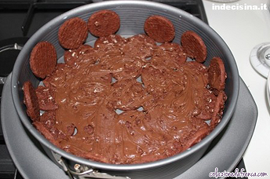
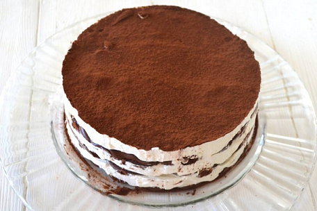

Volete preparare qualcosa di semplice, sfizioso e molto rapido, il dessert pan di stelle, o torta pan di stelle è la ricetta più adatta
a voi. Sostanzialmente è molto rapida da realizzare, perchè non necessitano preparazioni specifiche, basta solo montare la panna ed assemblarla.
Tutto qui.
Di seguito vi lascio la mia personale interpretazione per realizzarlo in maniera rapida e semplice.
Ingredienti
- 1 lt di panna da montare
- 1 Kg di crema di nocciole per pasticceria, possibilmente non nutella
- una confezione di biscotti tipo pan di stelle
- 200 ml di latte ps
- zucchero qb
- burro
- teglia con cerniera
- sbattitore a mano o planetaria
- un cucchiaio o marisa
- una boule in vetro
- un foglio di carta forno
Strumenti necessari
Iniziate versando la crema di nocciole all'interno della boule di vetro. Riscaldatela al microonde usando
una potenza che va dai 650W ai 800W, facendo attenzione che la crema non si cristallizzi per il troppo calore.
Riscaldatela fino a che non diventa molto morbida e facilmente spalmabile
Montate la panna, zuccherata secondo il vosto gusto, fino a che non sia dura e compatta.
Prendete la teglia e imburratene leggermente i bordi e ponete alla base il foglio di carta forno, opportunamente tagliato con la forma della teglia.
Versate il latte in una scodella ampia, in maniera che possiate inzuppare al suo interno circa 7-10 biscotti pan di stelle.
(1)Prendete i biscotti inzuppati e adagiateli sul fondo della teglia, avendo cura di coprirlo totalmente, in maniera che la panna,
o la crema di nocciole non possano andare a contatto con la carta forno.

Una volta che i biscotti hanno creato e riempito il fondo, (2)versate sopra uno strato di crema di nocciole e spalmatela il piu possibile
avendo cura di non danneggiare il fondo di biscotti.

(3)Fatto ciò versate uno strato di panna di circa 2-3 cm e appianatelo con l'aiuto di un cucchiaio
o di una marisa. Ripetete questi passaggi, dal numero (1) al numero (3) fino a che i vostri ingredienti non siano finiti.
Mettete il dessert in frigo per un paio d'ore circa.
Ricordate che più a lungo il vostro dessert riposa in frigo e più compatto sarà al taglio.
Quando aprirete il cerchio della tortiera, magari con un coltello, staccate molto delicatamente
il dessert dal metallo, in maniera che una ìvolta aperta non si danneggi.

Spero che abbiate trovato utile questa piccola guida, se volete rimanere aggiornati sulle prossime ricette vi prego di inserire
la vostra email nell'apposito spazio.
Grazie a tutti voi.